03.04.2023
2. Корпус и балласт
Стальной корпус для сравнительно большой круизной лодки – хороший выбор. Сталь жесткая, прочная, в то же время эластичная, не хрупкая. При ударе о препятствие скорее прогибается, чем ломается. Сталь и работы по ее сварке недороги. Главный минус – подверженность коррозии, которая требует дорогостоящих процедур по защите корпуса. Есть еще эстетический недостаток – сравнительно тонкий металл при сварке неизбежно тянет, что создает разные типы деформаций - впадин, выпуклостей, «домиков» и т.п.
Весной 2014 года проект Брюса Робертса с чертежами раскроя корпуса был передан верфи «Амета», подписан договор и работа началась.
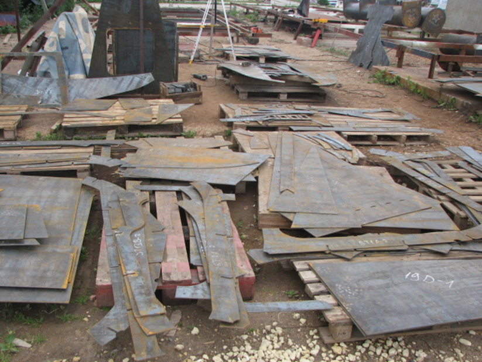
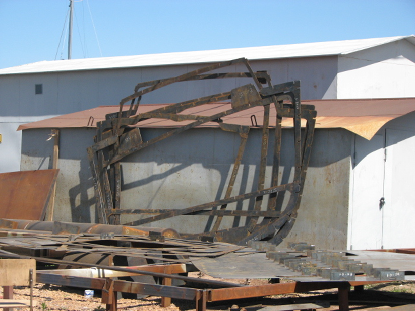
Ниже несколько фотографий процесса сварки корпуса.
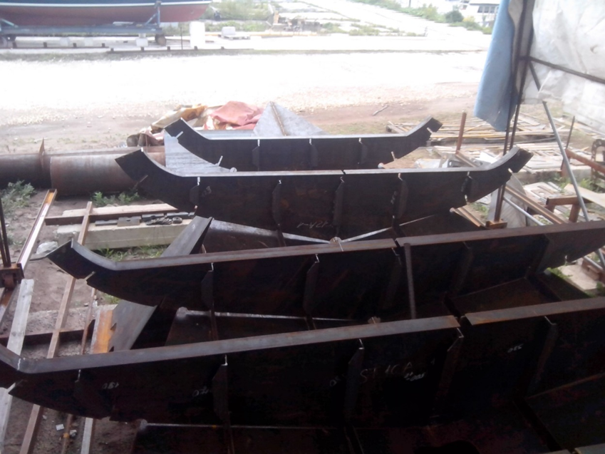
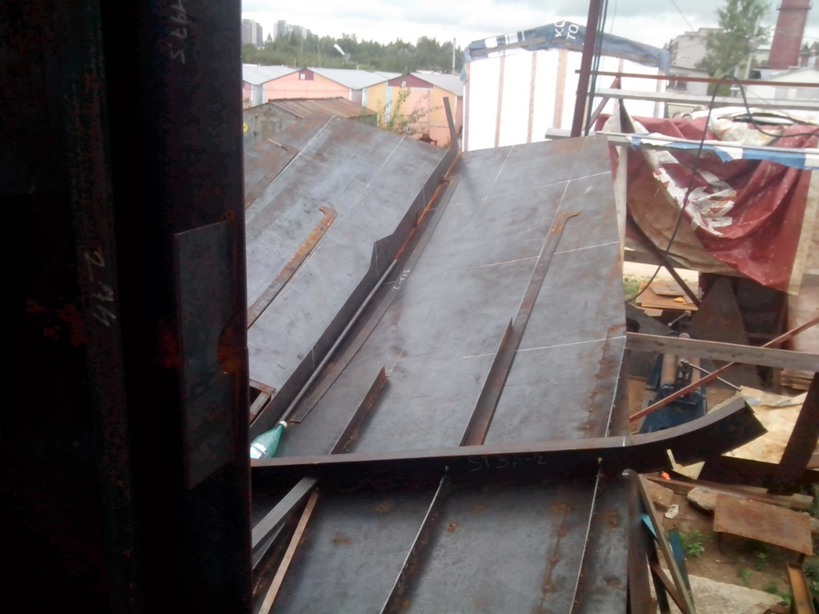
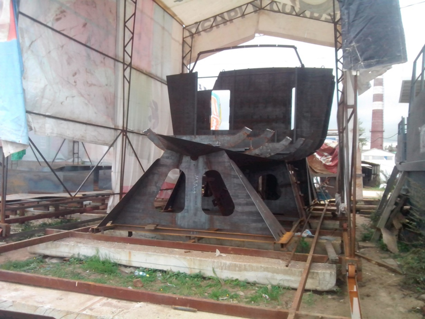
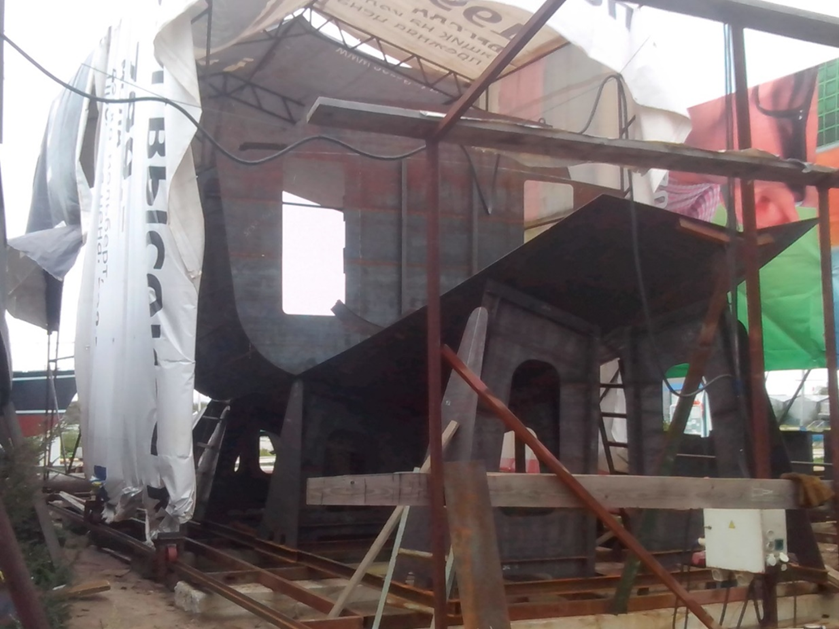
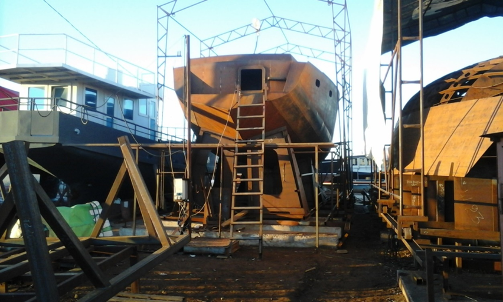
По договору верфь должна была также установить: перо руля с баллером; гельмпорт; сборка системы баллер-скег-гельмпорт; дейдвуд гребного вала с подшипниками Гудрича; вантпутенсы. Скажу сразу, что «Амета» свои обязательства выполнила в полном объеме.
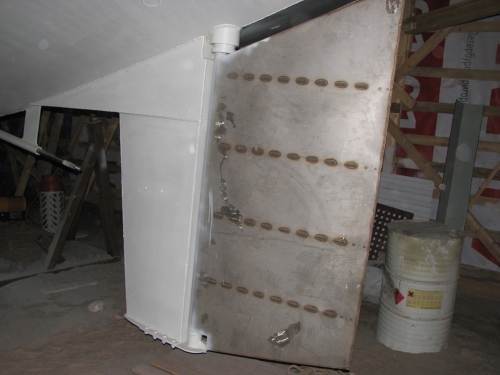
«Амета» варила корпус, но шла навигация, и мы на Катти ходили по морям, время не упускали. На верфь, разумеется, наведывались, смотрели. То, что выходило из-под электродов сварщиков, очень напоминало картинки проекта, поэтому особых вопросов не было.
Настал момент, когда готовый, уже ржавый (ха-ха) корпус был перемещен с верфи на участок, где лодку предстояло достраивать. С момента подписания договора прошло примерно восемь месяцев, а впереди была долгая дорога в дюнах. Корпус выглядел брутально и внушал уважение.
Строить лодку без крыши над головой нереально. Был возведен ангар, в котором постепенно появился сварочный, слесарный, столярный участки. Пол земляной, отопления нет.
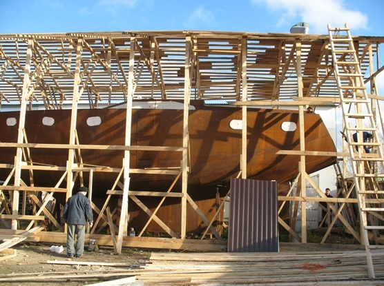
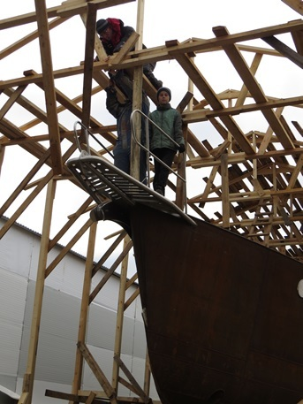
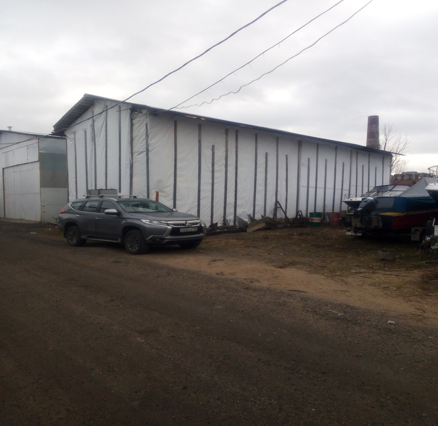
Качество сварки корпуса надо было проверить. Простейший, старейший, но, по- прежнему, эффективный способ – при помощи мела и керосина. Но мы прибегли к более современному методу капиллярной проверки швов – применяя специальные пенетранты. С одной стороны шва наносится из баллончика розовый пенетрант, с другой - белый проявитель. Наличие сквозных капилляров показывают розовые кляксы на белом фоне.
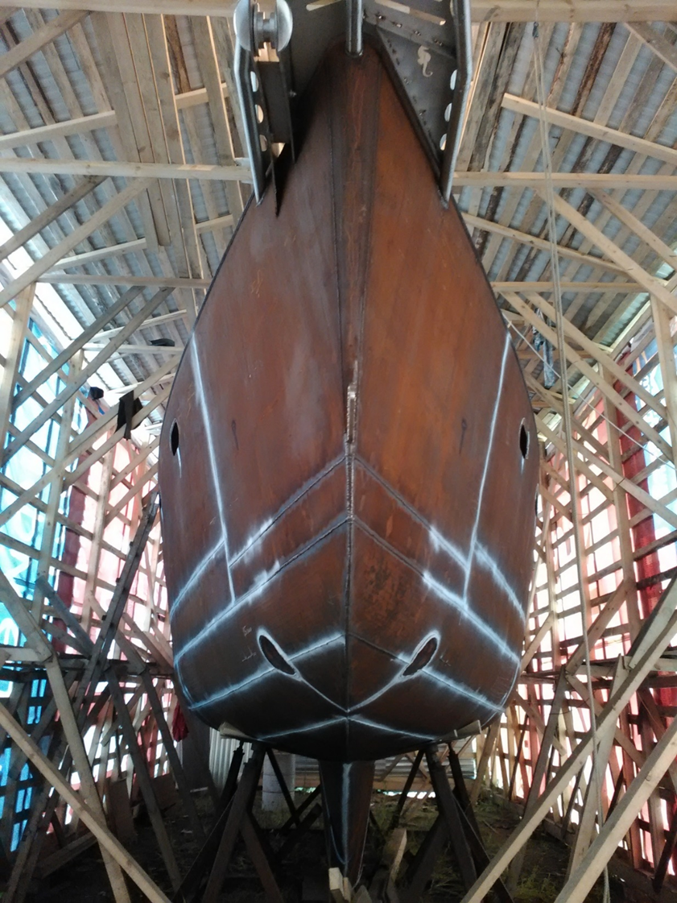
Надо сказать, что качество основных корпусных швов нас порадовало. Варил специалист. А вот, что касается примыкания палубы, рубка, газовый ящик, то протечки были. Работники верфи без споров все исправили. Они же исправляли сильные деформации железа в районе портлайтов. Впрочем, окончательная правка при помощи кувалды досталась экипажу.
Верфь также изготовила красивый бушприт из нержавейки (лучше, чем нарисован у Брюса) с якорным устройством, которое впоследствии показало себя неплохо.
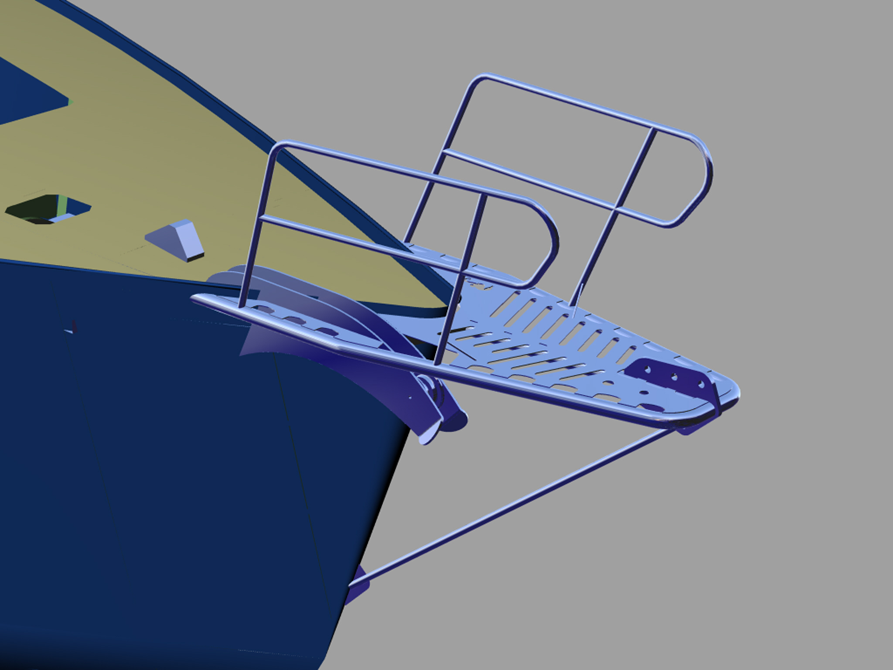
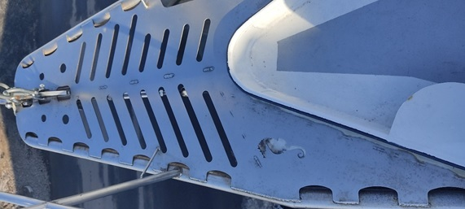
Изнутри лодка напоминала ржавую бочку сложной формы. Чтобы как то в ней обитать и работать, пришлось сделать ряд временных сооружений – трап, настилы различного уровня и т.п.
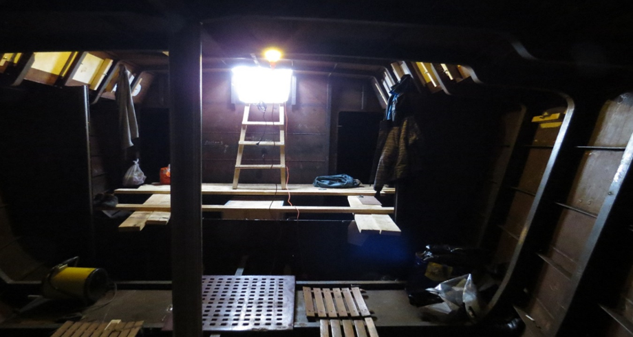
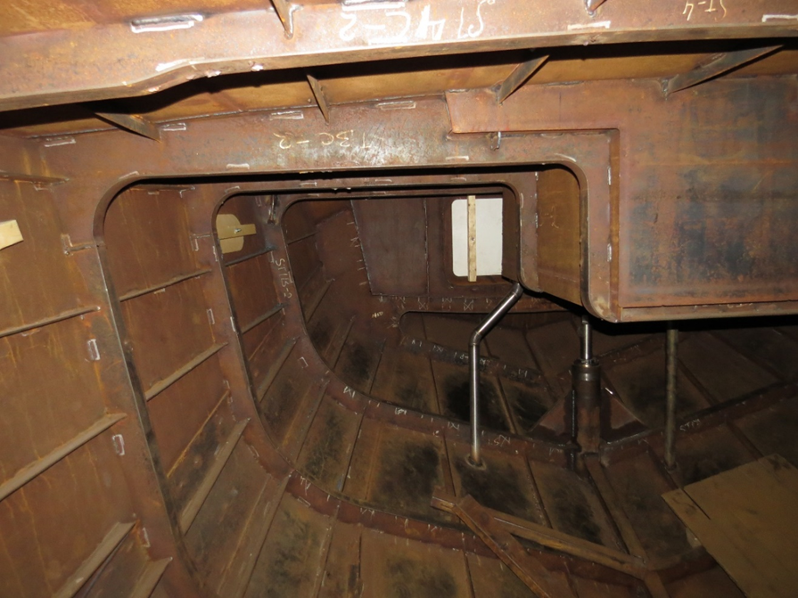
Корпус, как видим, стоит на кильблоке, спроектированном и изготовленным «Аметой». Кильблок служит нам и сегодня.
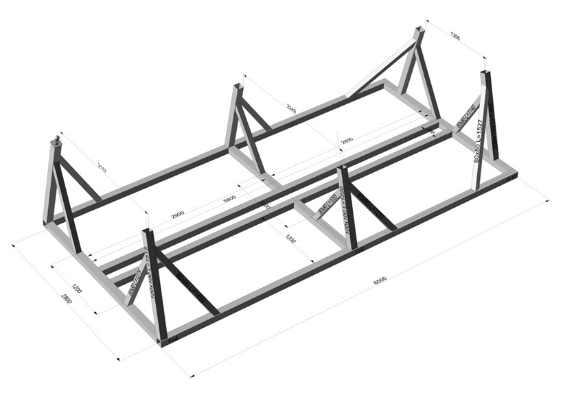
Заливка балласта
До покраски и дальнейшего оборудования необходимо было залить свинцовый балласт в фальшкиль. По проекту общий вес балласта составлял 5200 кг. Брюс рекомендовал 4500 кг залить сразу, а 700 кг отлить в виде чушек и использовать для дифферентовки. Так мы и сделали. Свинец приобретали в одной из многочисленных контор по приему цветного лома. Чего там только не было – и типографские шрифты, и большие куски неведомой природы, и внутренности аккумуляторов.
Внутри корпуса лодки была установлена печь-буржуйка. Оказалось, что плавить свинец удобнее всего в ведре из нержавейки. Перед плавкой порции свинца взвешивали. Заливали в фальшкиль простым ковшиком. Дело шло не быстро, но верно. 700 кг отлили аккуратными кирпичиками уже много позже, в зиму перед спуском. Замурованные в свинце отрезки тросика служат ручками. Основная часть передвижного балласта находится в районе миделя, примерно 1\4 в носовом трюме.
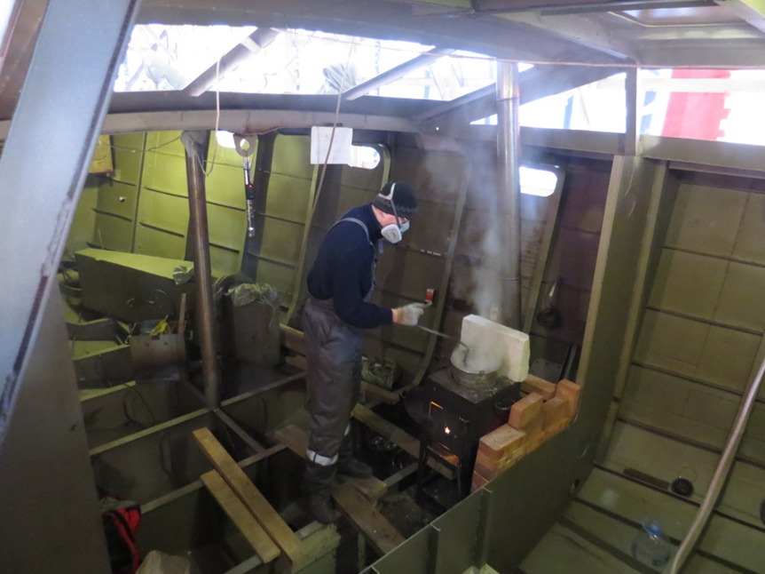
Балласт был залит строго по проекту. 4500 кг расположены в первых трех шпациях фальшкиля. Кормовые шпации пустые. Лодка почти не потребовала дифферентовки и при первом спуске на воду села четко по нарисованной нами (опять же проектной) ватерлинии.